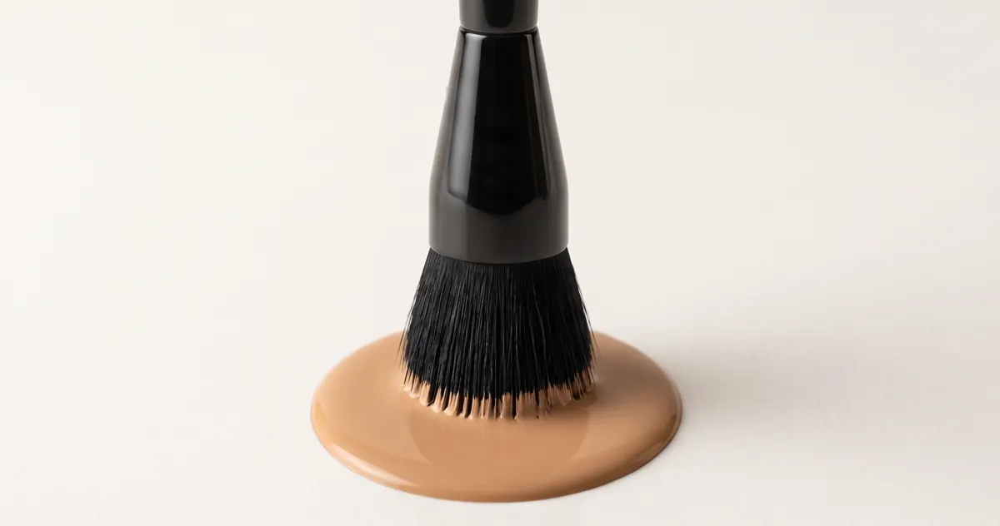
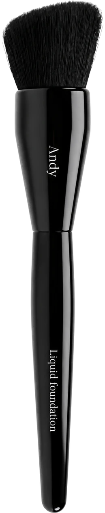
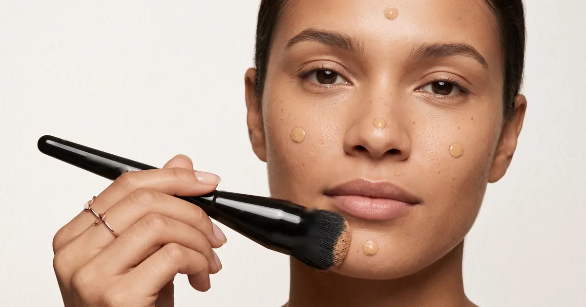
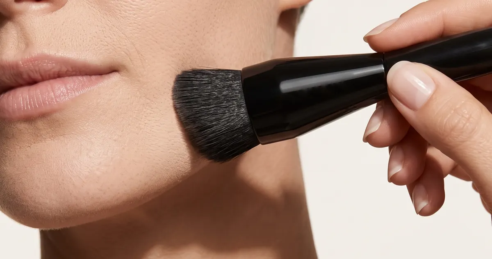
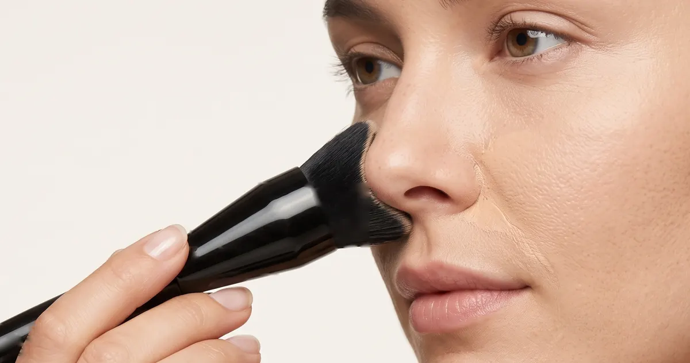
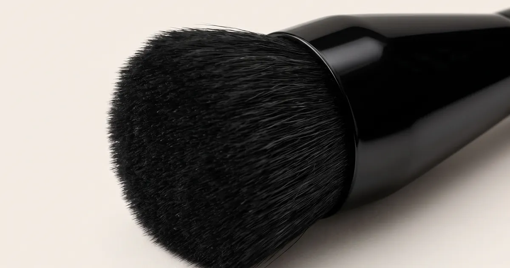
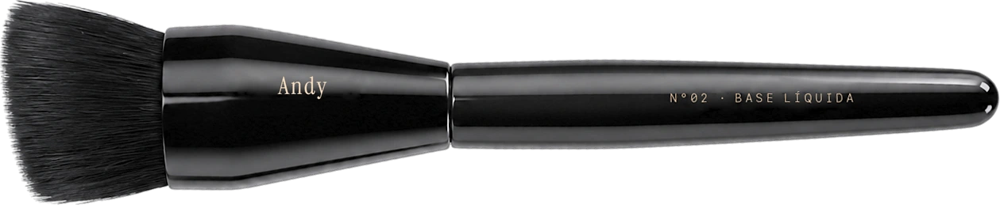

01

Fibras de 0,02 mm montadas à mão, uma por vez. O pincel deposita a base em camada única, sem marcas e sem excesso.
Seis decisões de engenharia, milímetro a milímetro, para a base desaparecer na pele e não no pincel.

O ângulo acompanha a curva da maçã do rosto e alcança o canto do nariz e a linha da mandíbula sem trocar de pincel.
Contorno anatômicoFios sintéticos de ponta cônica, mais finos que um fio de cabelo. Não bebem produto, então a base fica na pele e não nas cerdas.
Até 30% menos baseMiolo compacto para cobrir, borda aérea para esfumar. Cobertura e difusão na mesma passada, com acabamento de segunda pele.
Blur ópticoDois anéis de pressão travam os fios na raiz. A cúpula não abre e não perde fios, lavagem após lavagem.
Zero queda de fiosO peso mora perto das cerdas, não na ponta do cabo. A mão relaxa e a pressão se distribui por igual em cada movimento.
Pegada de pluma18 g de madeira certificada, com acabamento espelhado e selado. Não absorve água, não racha e não desbota.
Garantia vitalíciaMontado à mão, um fio de cada vez. Lote 02, com 200 peças numeradas.
Três minutos e dez segundos, o caminho repetido até a base parar de aparecer.





Pouco produto, mais passadas. Uma camada fina assenta na pele. Duas grossas marcam a linha do queixo.
Pele antes do pincel. Hidratante absorvido, sempre. O pincel espalha a base, não empurra creme.
Espiral, nunca vaivém. O movimento de ida e volta tira a base que você acabou de depositar.
Seco cobre, úmido funde. Um borrifo de água muda o acabamento sem trocar de pincel.
Lave a cada três usos. Sabão neutro, água morna, secagem com as cerdas para baixo. Fibra limpa devolve o toque de seda.
Cada peça sai com o cartão do ritual impresso em papel de algodão.
Ver a reservaO Lote 02 tem 200 peças numeradas. Quando a última sair, o molde da cúpula é aposentado. O N°02 não se repete.
Cúpula chanfrada a 12°, férula em latão escovado com dupla crimpagem, cabo em faia FSC laqueada.
O número da peça gravado a laser na férula, com duas iniciais se você quiser, sem custo.
Os seis gestos impressos em papel de algodão 600 g, do tamanho da palma da mão.
Costurado à mão, com trava magnética. O pincel viaja sem perder a forma da cúpula.
Sem cobrança agora

Duzentas peças.
A sua tem número.